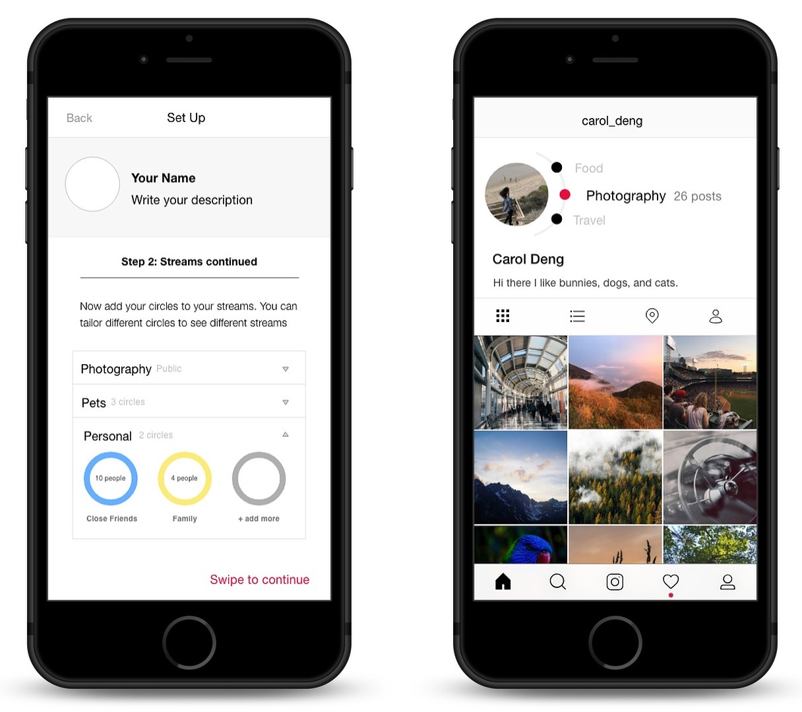
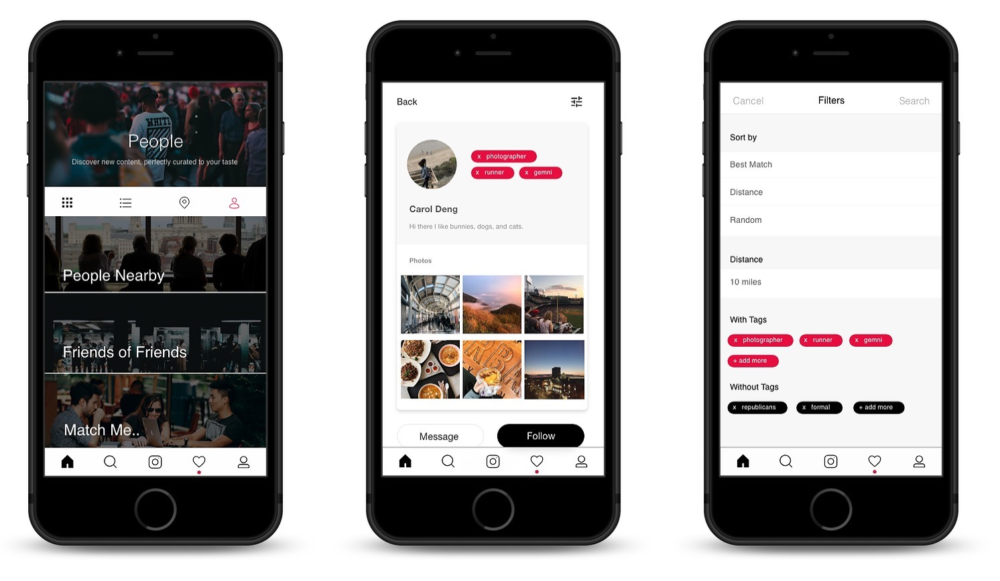
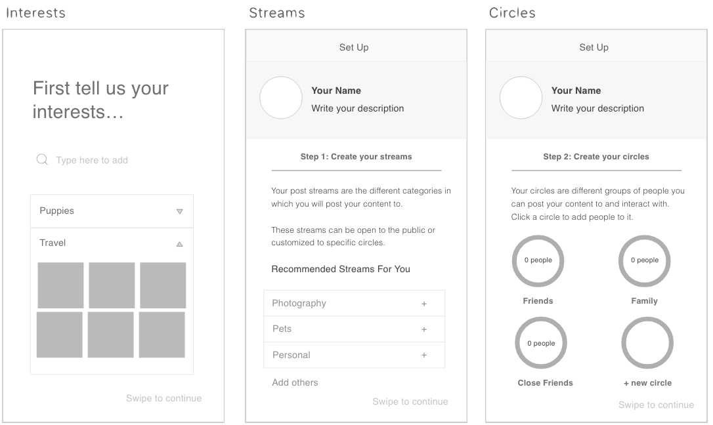

This was a project I worked on through Social Web, an elective HCI class that examines a sampling of the social, technical and business challenges social web sites must solve to be successful.
Through this project, we aimed to gain a deeper understanding of why and how people use Instagram, how authenticity plays into social media, and how best to design a social media platform so that users feel like they are posting authentically.
Team
I worked in an interdisciplinary team of three: myself, another IS/HCI major, and a Business major.
Skills
Interviewing
User testing
Conducting Research
Wireframing
Prototyping
Presenting
Tools
Adobe XD
Google Slides
Problem Statement
Instagram is intended to connect individuals, but more often that not, it is used to curate highly edited, illusory versions of themselves. People are not at fault for this. Rather, the platforms that enable and even promote this behavior are to blame.
Project Vision
We specifically focused on redesigning Instagram to promote an authentic user experience. By doing so, we hope to create more open spaces, conducive to deeper connections, and more meaningful presentations of one’s self.
Final Product
View the full prototype here! Selected screens are below:

Users can choose who sees their content with streams and circles.

The powerful explore page allows users to connect with others and filter who they see.
Process
After doing initial research on existing works that offered different approaches to image sharing on social media, we decided to take a step back and develop a deeper understanding of our problem space. Our own experiences with the platform, coupled with the implications of Instagram accounts such as Essena O’Neill’s and SocalityBarbie, offered some initial insights on user behavior on Instagram and how pressure to post appealing and high quality content might lead to disingenuous, homogenous behavior. Furthermore, it shed some light on how the nature of social media platforms and the use of social currency indicators could shape these actions.
Some papers offered insight on how the context of a social media platform can nudge users toward certain behaviors. “Performances of the Self on Twitter” suggests that users adjust their “performances of the self” to fit the context of community wide conversation. This implies that because interactions are being placed within the context of a social media platform, users are likely to shift behavior to connect with, gain sympathy and understanding from, and entertain audiences, all while maintaining a sense of personal identity. “I Tweet Honestly, I Tweet Passionately” also discusses the topic of an imagined audience, and shows that when users deal with multiple audiences online, they utilize different techniques to appeal to each one, in a way mimicking the multiplicity of real-life interaction. Others pointed toward the potential for virtual interactions on social media to foster development of “alternate forms of the self”. “Can You See The Real Me?” suggests that the Internet, when compared to face to face interaction, offers users the ability to showcase their “true self” and project idealized qualities onto their partners.
It suggests that online communication, when done right, can lead to deep and meaningful relationships at a “breathtaking speed” due to the nature of Internet interactions. Other papers like “Follow Me and Like My Beautiful Selfies” and “Let Me Take a Selfie” offer a contrasting perspective, pointing at the negative consequences that photo-sharing on the Internet that produce. In these papers, narcissism is shown to be directly linked with the desire for a large social network. Furthermore, peer comparison is shown to be influenced by social currency indicators, like the number of likes or followers a user has. Some users develop unhealthy and unrealistic standards for beauty, and resort to harmful practices to achieve a “desirable” appearance. Others still might engage in social comparison with those they think they are superior to, to boost their own self esteem. Insights from these papers point at the delicate balance between positive and negative consequences of interactions on the Internet.
To complement this knowledge, we also sought to better understand the social media platforms that are commonly used nowadays, how usage and behavior might vary from platform to platform, and the features that users like and dislike about each one. We were also curious about how platform features might shape the way users interact with each other while on the app.
Specifically, we were fascinated by the trend of users having multiple Instagram accounts: an Insta and a Finsta (fake Insta). From our prior knowledge, the former tends to be more curated and reserved for posts of higher quality, while the latter tends to be more unfiltered and removed from the need to garner likes. We wondered what the influences were behind user motives on both kinds of account and how this dichotomy came to exist on a single platform. We noticed the same kind of trend of unfiltered, relaxed image posting on Snapchat as well and wanted to gather more information from examining users in real life.
We interviewed five Instagram users at CMU that vary in their use of image sharing social media platforms. For each user, we asked them about their intentions behind downloading Instagram, their common interactions with other users’ content and within the app in general, the number of accounts they have, and the type of content they post. We repeated these questions for the other social media platforms users frequently used. Finally, users were asked to demonstrate their typical thought process while using Instagram while performing a walkthrough. To wrap up, we asked each user what they believed “authenticity” to mean, either as a standalone word or in the context of social media.
From our interviews, we saw that overall, users seemed to care a lot about self-presentation on Instagram. Many interviewees mentioned thinking carefully about filters, composition, and caption choices and whether or not they would be well received by people they follow. One extreme of this was a user thinking of possible kinds of pictures to post on Instagram, and then getting that particular type of photo taken. There was also a split between people that disliked the “competitive” nature of Instagram and those that enjoyed the high level of quality that Instagram photos tended to have. An interviewee commented that as a designer, they appreciated the fact that looking at the high quality feeds of others inspired their own work. Others still mentioned that although Instagram involved a lot of work (selecting photos, filtering them, and adding appropriate captions), they still enjoyed being able to select special “highlights” of their lives to display on the platform, showcase them to friends, and learn more about the “highlights” of others’ lives as well. Another interesting aspect was the use of multiple accounts. Users expressed their joy in being able to see different sides of people’s personalities through the variety in content. Along this vein, users also created different accounts, meant to cater to specific interests, like graphic design, photography, and finstas, and to different groups of people.
In creating our initial wireframes, we thought carefully about the insights collected from our research. Originally, we had approached the project with a goal of making Instagram more “authentic” and less prone to the homogeneity and calculated nature of posts nowadays. However, the results of our interviews and our struggle to craft a definition of “authenticity” for us to build toward made it clear that “authenticity” meant different things for everyone. A user could be authentic in their passion for curating beautiful, quality posts while another could see unfiltered, candid photos as their ideal of authentic. An endeavor to de-emphasize the over-curation of photos might be against the wishes of our target market, and enacting such a wide cultural change might be infeasible. Thus, we evolved our end goal to focus on fostering an environment where users would feel comfortable expressing their truest selves and posting the content they want to post, whether it’s ultra-curated, completely unfiltered, or somewhere in between.

Our initial ideas centered around returning the focus of Instagram to user interests. We introduced the ideas of “circles”, which are user-curated groups of friends. We also created “streams”, allowing users to host multiple themed feeds, all in the same account. Furthermore, we recognized the idea that users might want to show different kinds of content to different friend circles, we made it so that users can designate which circles can see certain streams. We also took away indicators of social currency. Instead of showing amassed numbers for likes and followers, users would still receive notifications but would not be able to see the consolidated numbers. Finally, we revamped Instagram’s Explore page. Users had mentioned that they purposely avoided clicking on certain types of content to avoid seeing similar items pop up on their Explore page. Furthermore, they expressed frustration at the seeming lack of variety and the ineffectiveness of the current algorithm. Our changes made it possible to filter explore queries by geographic location, chronology, and keyword.
After speed dating our initial wireframes with five users to test for intuitiveness, whether or not they would enjoy using the app or prefer the changes compared to how Instagram is now, and whether or not we achieved our goal of creating a comfortable, accepting environment for users. We also collected suggestions users might have for improvement.
The majority of users commented on our automatic tags and explore page with possible improvements. Users enjoyed the use of automatic tags (generated for photos depending on content) because they allowed for facilitated search, which they felt Instagram doesn’t currently provide. However, they were worried that automatic tags would sometimes be incorrect or irrelevant, and suggested manual tag entry as a way to prevent against that.
Users also commented on the functionality of the explore page. Most of them enjoyed the different filtering methods and thought they were simple and effective. Although they thought it was a large improvement over the current explore page, they suggested combining current functions, like searching by tag and by location, to make the feature more powerful.